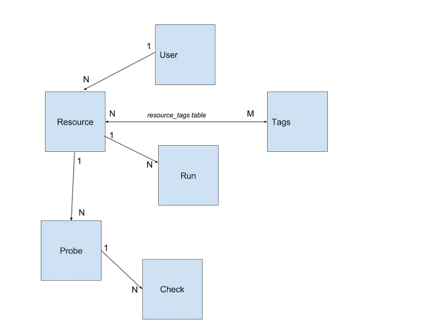

GeoHealthCheck
QoS Monitor for (OGC OWS)
Geospatial Web Services
Credits
This presentation has been created with
Reveal.js by Hakim El Hattab
Create beautiful interactive slide decks using HTML.
Use left/right arrow keys. ESC for slides overview
PDF Print then File|Print... (Chrome only)
OGC ? OWS?
- OGC: Open Geospatial Consortium
- OGC defines OWS standards
- OWS: OGC Web Services
- OWS standards include:
WMS, WFS, WCS, CSW, SOS, WPS, WMTS
Contents
- OWS Monitoring Challenges
- GHC Walk-through
- GHC Setup
- GHC Architecture
- GHC Project
GHC=GeoHealthCheck
OWS Monitoring Challenges
“I see pink tiles!”
What we expect
What we see
What we received
In Image Error Message
"The Blank Stare"
But our HTTP Monitor said:
200 OK...
Broken GetCapabilities response
- truncated file
- ad-hoc coded WMS/WFS
GetCapabilities response OK,
but
- Capabilities doc may be static file
- No guarantee specific services will work:
WMS GetMap, WFS GetFeature, ...
Time-based OGC Services
- SensorWeb Enablement (SWE)
Internet of Things (IoT)
- Sensor Observation Service (SOS)
- SensorThings API (STA)
SOS Viewer (52North)
Gaps in SOS-Data
Public "Uptime" services
Some OGC-service-aware...
But most critical OGC-services
run internally in/on datacenters/intranets
Conclusion
Need OGC-service-aware QoS checking
with history capture
GeoHealthCheck
Walk-through
demo.geohealthcheck.org
GeoHealthCheck
Setup
GHC Parts
- Python Webapp (Dashboard)
- HealthCheck Runner (Plugins!)
- Database
Python Webapp
- WSGI - standard Python
- Flask - web framework
- Run Standalone, or
- In http-server e.g Nginx or Apache2
HealthCheck Runner
- Via cron-job
- Frequency and history retain configured
- Result reports
- Email Notification trigger (optional)
Plugins - Probes and Checks
- Standard (included in GHC)
- Custom (include your own!)
- Configurable via Web UI
- More later on...
Database
- Entities: Users, Resources, Runs, Tags, ProbeVars, CheckVars
- Maintains history (Runs)
- Multiple backends
via SQLAlchemy: default SQLite
Tags
- For grouping Resources
- Provide in UI
- More later on...
Installation
- Standard Python setup - Instructions
- Paver for setup and management tasks
- Alembic with Flask-Migrate for DB upgrades
Settings
GHC_RETENTION_DAYS = 30
GHC_RUN_FREQUENCY = 'hourly'
GHC_SELF_REGISTER = False
GHC_NOTIFICATIONS = False
GHC_NOTIFICATIONS_VERBOSITY = True
GHC_ADMIN_EMAIL = 'you@example.com'
GHC_NOTIFICATIONS_EMAIL = ['you2@example.com', ..]
GHC_SITE_TITLE = 'GeoHealthCheck Demonstration'
GHC_SITE_URL = 'http://host'
GHC_SMTP = (email settings)
GHC_RELIABILITY_MATRIX = (when to show green/orange/red)
GHC_MAP = (map setup)
GHC_PLUGINS = (Probes and Checks, INCLUDING YOURS!)
GHC_PROBE_DEFAULTS = (Default Probe per Resource Type)
GeoHealthCheck
Architecture
Data Model
HealthCheck Model
- Resource has URL
- URL is usually OWS Endpoint
- Probes: fire request(s) on URL
- Resource has N Probes
HealthCheck Model
- Probe has N Checks (checklist)
- Each Check checks Probe result aspect
- Check gives aspect verdict (success/fail)
- All Checks: Probe Run Report (JSON)
Plugin Model
- Probes and Checks are Plugins
- Plugin class and/or modules conf: GHC_PLUGINS
- Standard Probes & Checks
- User/Your Probes & Checks
Plugin Model - Probe Types
- Template (OWS) Requests
- Free-form: Probe Anything!
Plugin Model - Probe Types
- Template (OWS) Requests
- Free-form: Probe Anything!
Time for some code!
See also Plugin Docs
Simplest Probe Class

Check Class HTTP Status

Base GetCapabilities Probe

WMS GetCapabilities Probe

GeoHealthCheck
Project
Open Source (MIT) on GitHub
Started by Tom Kralidis
pycsw
PyWPS
OWSLib
MapServer
GeoNode
QGIS
A geopython Project

Current Status (May 4, 2017)
- working towards first release: v0.1.0
- Tags and Plugins (Probes & Checks)
- Demo demo.geohealthcheck.org
- Dev dev.geohealthcheck.org
Under Development
- See Issue Tracker
- Documentation
Planned
- REST API architecture
- Monitoring tools integration (Icinga, Munin etc)
You Can Help!
- Coding (Plugins!)
- Testing
- Documentation
- User Stories
- Sponsored Development
Thank You!
- Website: geohealthcheck.org
- Demo: demo.geohealthcheck.org
- Development: dev.geohealthcheck.org (unstable!)
- Sources: code.geohealthcheck.org
- Docs: docs.geohealthcheck.org
- Presentation: geohealthcheck.org/presentation